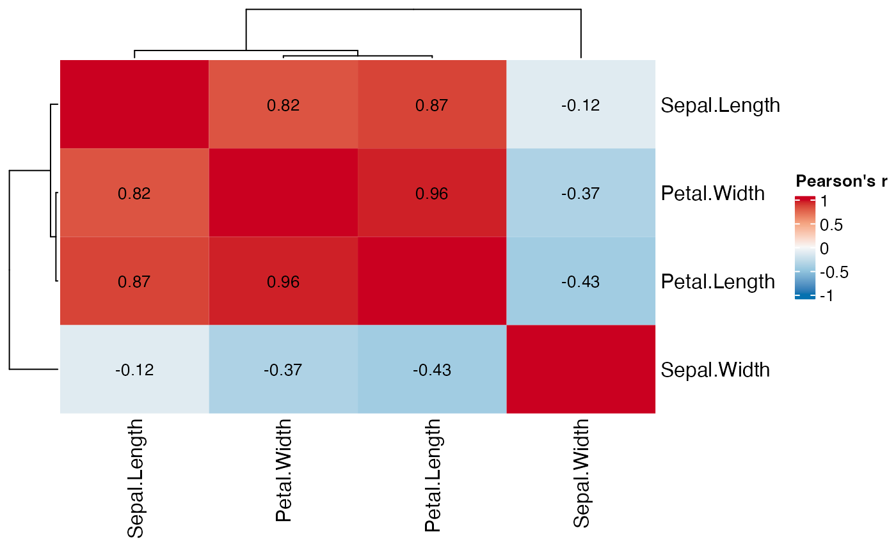
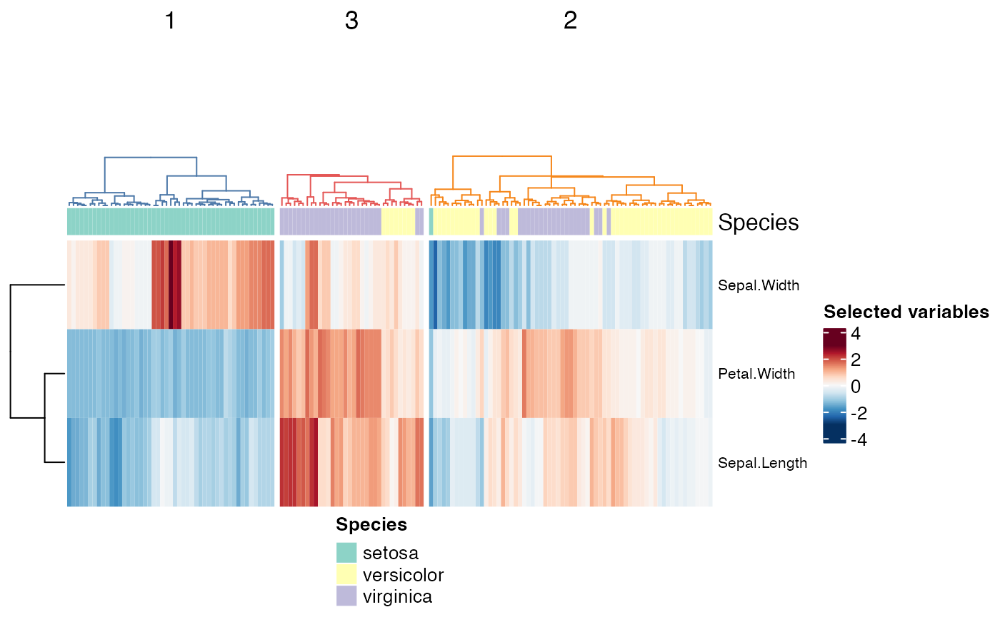
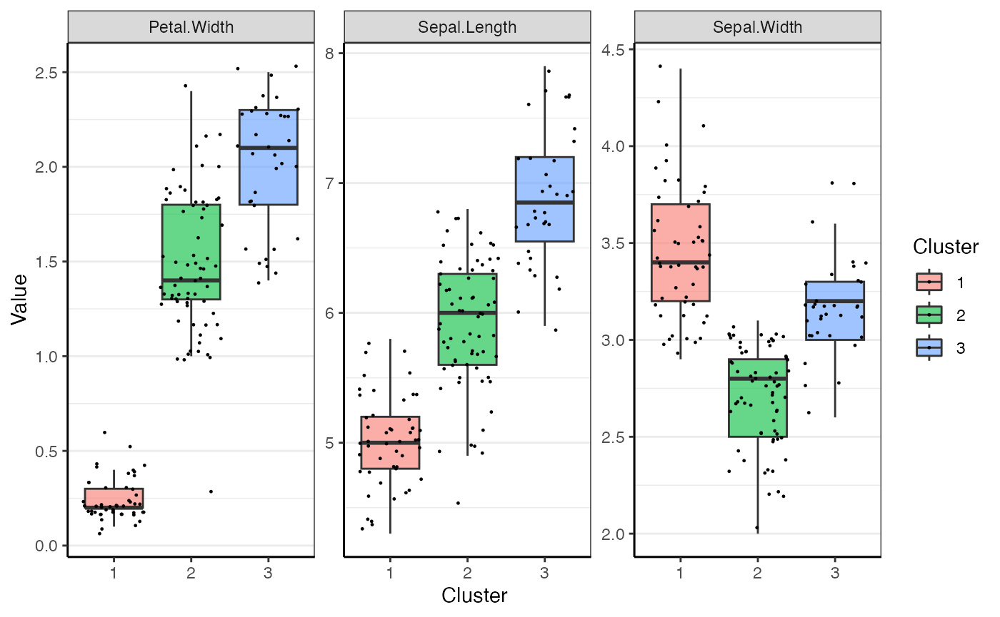

This document shows how to use some functions included in the package
to document and reproduce a clustering workflow from the app. Although
these functions do not cover all the steps such as selecting features,
they allow users of the Shiny app to show the resulting heatmaps and
boxplots. The example dataset used here is the iris
dataset.
First we split the numeric and categorical variables and scale the data.
numeric_data <- iris %>% select(where(is.numeric))
annotation_data <- iris %>% select(where(is.factor))Let’s check the dataset for highly correlated variables that will likely skew the clusters with redundant information:
correlation_heatmap(numeric_data)
As seen above, petal length and width are highly correlated, so we keep only one of them:
The clustering itself takes three steps: computing a distance matrix, computing the hierarchical clusters and cutting the tree to find the desired number of clusters. In the app, each of these steps has matching parameters: apply scaling and distance/similarity metric, linkage method and the number of clusters.
scaling <- TRUE
distance_method <- "euclidean"
linkage_method <- "ward.D2"
# this assumes that, in the app, we identified 3 as the optimal number of clusters
k <- 3 These parameters are used in three functions that the app also uses:
compute_dmat, compute_clusters and
cut_clusters. You can check the documentation for each
function in the package website, or interactively through
?compute_dmat.
dmat <- compute_dmat(subset_data, distance_method, TRUE)
clusters <- compute_clusters(dmat, linkage_method)
cluster_labels <- cut_clusters(clusters, k)Now we can check both the heatmap+dendrogram and boxplots. A function
that covers most steps to produce the heatmap is included in the
package, with the name: cluster_heatmaps(). It plots the
dendrogram, the annotation layer, the clustered data heatmap and the
heatmap with the rest of the data not used for clustering. In the Shiny
app this is done automatically, but outside, plotting the annotation and
the unselected data are optional steps; the annotations require an extra
step with the function create_annotations(). The colors
used in the app are also exported by the package as the variable
cluster_colors.
species_annotation <- create_annotations(iris, "Species")
cluster_heatmaps(scale(subset_data),
clusters,
k,
cluster_colors,
annotation = species_annotation) In addition to the heatmap, the boxplots in the app are also available through functions. There are two steps required to show data through box plots: annotating the original data with the cluster and plotting it.
annotated_data <- annotate_clusters(subset_data, cluster_labels, TRUE)
cluster_boxplots(annotated_data)